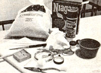
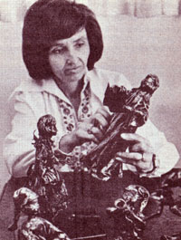

With materials that cost about 30 cents, Pauline McCoskey can make a small statue that will sell for between $25 and $30! And-aside from peddling her figurines at local art shows and stores (which take all she can produce during the holiday season)-Pauline has more calls to teach (for a good salary) this papier-mache craft than she has time to handle!
If you'd like to learn the rewarding skill, just follow the step-by-step instructions outlined here.
[1] Cut rough torso and head shapes from plastic foam. Use quarter-inch dowels to connect the wooden base and torso, and toothpicks to attach the head.
[2] Fashion the arms from utility wire (covered with florist's tape) and then apply instant papier-mâché (available at hobby shops) to create facial features, hands, and any other parts of the body you want to show in detail.
[3] Allow the papier-mâché to dry for a day, then clothe your figure. Scraps of fabric-dipped in a heavy starch solution-can be draped in robe fashion. Some sewing is required . . . but sleeves-for example-can be attached to the garment with the same thick, sticky solution of household laundry starch that you'll use to give body to all of the statue's clothing. Starched embroidery thread serves as hair.
[4] On the following day-when your figurine is dry-spray-paint it. (Black or dark green enamel usually gives the most striking results.)
[5] Once the paint dries, rub your statue well with gold or pewter metallic wax (also available from your craft shop).
[6] The entire process should take about 5 to 15 hours-spread over a period of three days-and the characters you can create are many and varied!
|
 PHOTOS BY MARK FARRIS |
 |
|